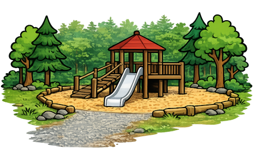
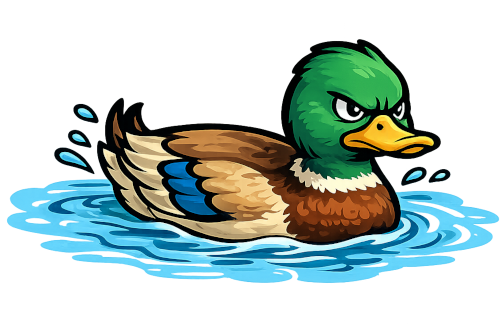

🎮 Um das Spiel geht's
Im Kurs baut jedes Kind sein eigenes kleines Computerspiel mit Scratch: Ein Fisch schwimmt die Waldnaab hinauf bis zum Abenteuerspielplatz. Berührt er das Ufer, schwimmt er zurück an den Start. Wer schnell ist, baut zusätzliche Hindernisse ein – eine Angel und eine patrouillierende Ente.




📄 Anleitung zum Mitnehmen
Die Anleitungskarten führen Schritt für Schritt durchs Bauen des Spiels – mit Aufgabe auf der Vorderseite und Lösung zum Nachschauen auf der Rückseite.
🔑 Bei Scratch anmelden
Zum Programmieren braucht ihr einen Scratch-Account. Falls ihr schon einen Zugangs-Zettel vom Kurs habt, könnt ihr euch damit direkt anmelden.